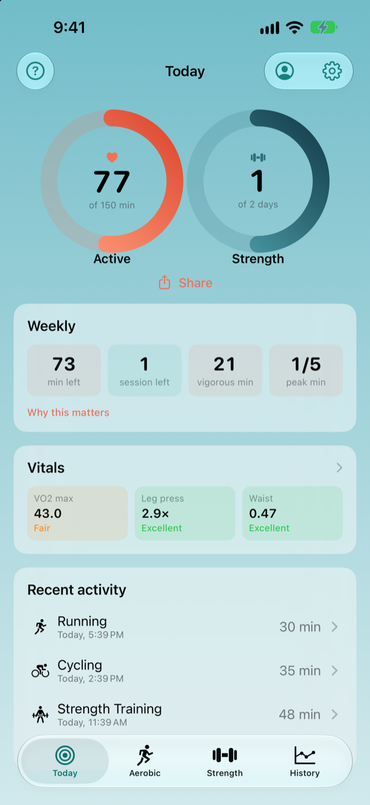
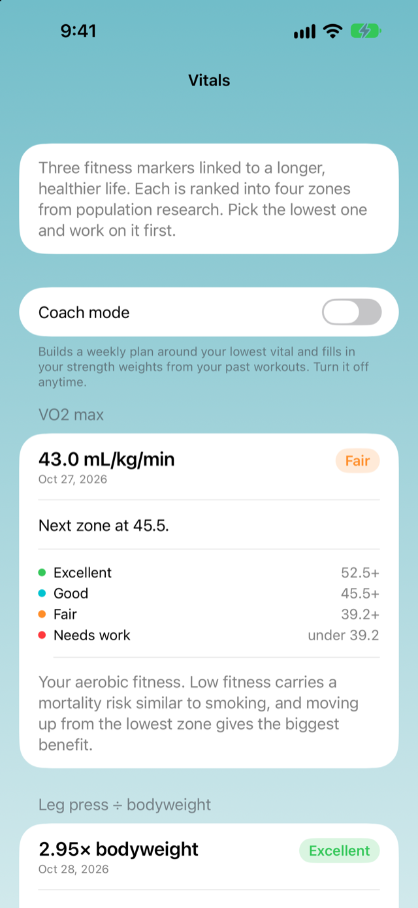
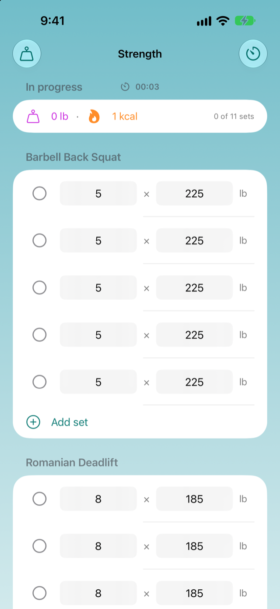
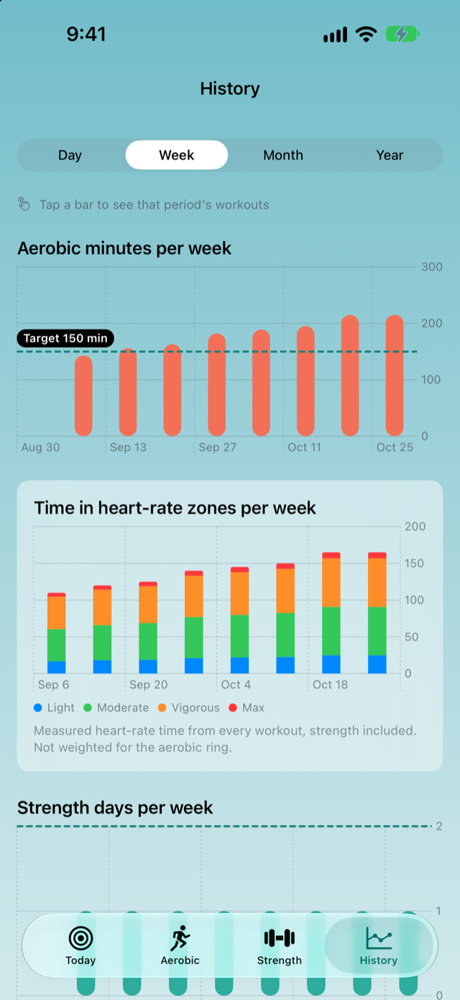

Hit your weekly activity goal.
Track the aerobic minutes and strength days that actually move your health, based on the U.S. Physical Activity Guidelines, not an arbitrary step count. See your VO2 max and heart rate zones, log every lift, and keep everything on your device or in your own iCloud account.
Requires iPhone. Apple Watch companion included.
Your dashboard shows two rings, aerobic minutes and strength days, personalized to your age and health profile. Every walk, run, or lift you already log in Apple Health counts automatically.
Weekly aerobic and strength goals drawn from the 2018 U.S. Physical Activity Guidelines, tailored to you, not a generic "10k steps."
See your VO2 max, leg strength, and waist-to-height ratio, each ranked into four zones from population research, so you know what to work on first.
Pick a goal (cardio endurance, lifting heavier, VO2 max, or your lowest vital) and get a weekly training plan: 4x4 HIIT intervals, easy zone 2 cardio, or an extra strength day, with suggested weights and interval cues on Apple Watch.
A Home Screen widget and an Apple Watch complication show your rings at a glance, and they appear in the Smart Stack while you work out.
During a workout, your live heart rate and intensity zone track right on the Lock Screen and Dynamic Island.
Color-coded light, moderate (the zone 2 range), vigorous, and max intensity during workouts on iPhone and Apple Watch, so you know when you're working hard enough.
"Hey Siri, let's get Physical" starts a workout or a saved routine. Ask "What's my VO2 max in Physical?" or "What's my plan in Physical?" and get an answer without opening the app. Works with Shortcuts and Spotlight too.
Use the Action Button on iPhone or Apple Watch, or touch and hold the app icon for quick actions, to jump straight into a run, a walk, or a strength session.
Aim for a time, a calorie burn, or a distance. Your Apple Watch buzzes at the halfway point and the finish, so you can stop watching the numbers.
Outdoor walks, runs, hikes, and rides on Apple Watch track live distance and pace and map your route, right alongside your heart-rate zones.
Play, pause, and skip your music right from the workout screen. Works with your own library or Apple Music. No subscription required.
Log strength sessions on iPhone or Apple Watch with muscle-group coverage and weekly sets by movement: push, pull, squat, and hinge. Start from a ready-made full-body plan in one tap.
Your saved strength templates and profile back up to your iCloud account, so they survive a reinstall and stay in sync across your devices.
Turn your two rings into a clean image you can post anywhere, and export your logged workouts to CSV anytime, so your data is always yours.
No account, no analytics, no network calls. Your health data stays in Apple Health, and your backups stay in your own iCloud account. Nothing is sent to us.
A few details (age, sex, height and weight) personalize your weekly guideline targets.
Walks, runs, and lifts you log in Apple Health count automatically. Log strength right in the app.
Watch your aerobic and strength rings fill, with smart weekly reminders that adapt to how close you are.
Your week at a glance, from guideline targets and Vitals to every logged set.




Try everything free for 7 days. Then pick whatever fits how you use the app.
7-day free trial
Cancel anytime in Settings.
7-day free trial
About $1.67 a month. Cancel anytime in Settings.
One-time purchase, yours forever. Family Sharing supported.
Prices in US dollars; local prices vary by country. No account, no ads, no tracking, either way. Already subscribed on another device? Restore your purchase from Settings.
The 2018 U.S. Physical Activity Guidelines recommend that adults get 150 to 300 minutes of moderate aerobic activity a week (or 75 to 150 minutes of vigorous activity, or a mix), plus muscle-strengthening activity on 2 or more days. Physical turns this into two weekly rings, aerobic minutes and strength days, personalized to your age, and counts vigorous minutes double, just like the guidelines.
It depends on your age and sex. Physical ranks your VO2 max into four zones (Excellent, Good, Fair, Needs work) from population research. For example, for women aged 40 to 59, 46 or higher ranks Excellent and under 30 ranks Needs work. VO2 max comes from the Cardio Fitness estimates Apple Watch records during outdoor walks, runs, and hikes.
Hard intervals raise VO2 max fastest. Turn on Coach mode, pick the VO2 max goal, and Physical plans 4x4 interval sessions (four rounds of 4 hard minutes with 3 easy minutes between) with a heart rate range for the hard parts, and can send them to your Apple Watch.
Yes. Physical counts any workout saved to Apple Health, including from iPhone and other apps, and you can log strength training right on iPhone. An Apple Watch adds live heart rate zones, outdoor GPS, and the VO2 max estimates that Vitals uses.
Physical is free for 7 days. After that, it's $2.99 a month or $19.99 a year (both with the 7-day free trial), or a one-time $34.99 lifetime unlock with no subscription. Prices are in US dollars and vary by country.
Step goals like 10,000 steps aren't what the health guidelines measure. Physical tracks the weekly aerobic minutes and strength days the U.S. Physical Activity Guidelines recommend, so walking, running, cycling, swimming, HIIT, and lifting all count toward the goals research links to a longer, healthier life.
More answers on the Support page.